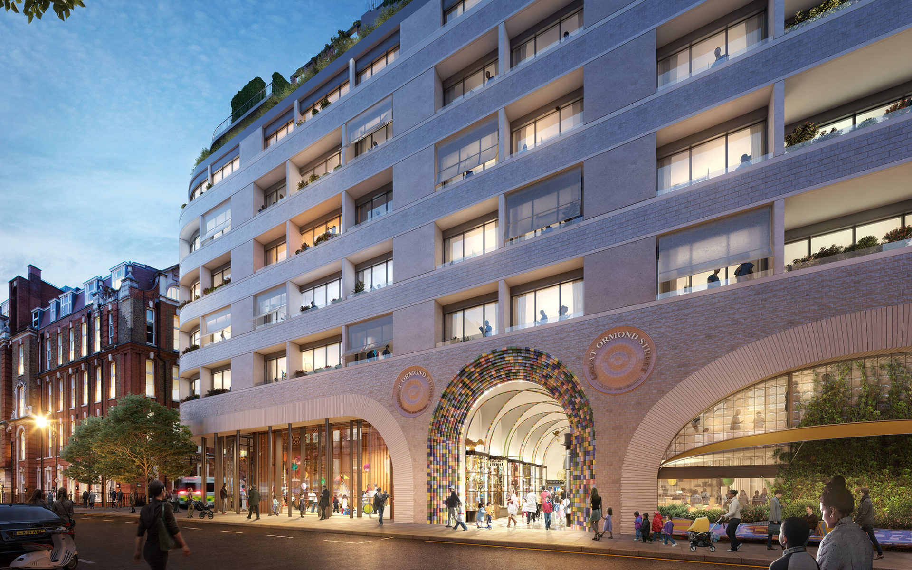
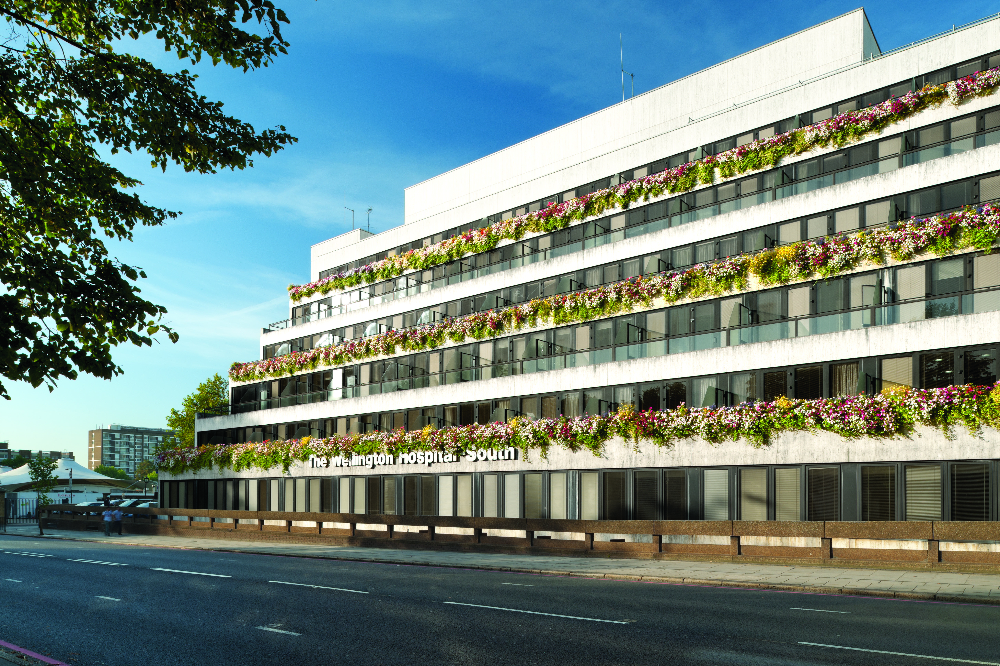

PARTNER HOSPITALS
合作医院
与英国顶级医院深度合作，为您提供世界一流的医疗服务
 NHS Trust
NHS Trust
Charing Cross Hospital
综合医疗 · 神经科学
帝国理工医疗集团旗下，以神经科学和创伤急救闻名，是伦敦西部最重要的综合医院之一。
 NHS Trust
NHS Trust
Royal Marsden Hospital
肿瘤专科 · 癌症研究
世界著名的癌症专科医院，与ICR合作开展前沿癌症研究，是全球肿瘤治疗的标杆机构。
 NHS Trust
NHS Trust
St Thomas' Hospital
心血管 · 综合医疗
伦敦最古老的医院之一，以心血管科和急诊医学著称，毗邻国会大厦，拥有卓越的医疗传统。
Private
The London Clinic
私人医疗 · 综合专科
伦敦最大的私人医院之一，位于Harley Street医疗区，提供高端定制化医疗服务。

NHS TrustGreat Ormond Street Hospital
儿童专科 · 罕见病
世界领先的儿童医院，专注于儿童罕见病和复杂疾病的治疗，是全球儿科医学的权威。

PrivateWellington Hospital
神经康复 · 运动医学
英国最大的私立医院之一，以神经康复和运动医学见长，众多国际运动员的选择。